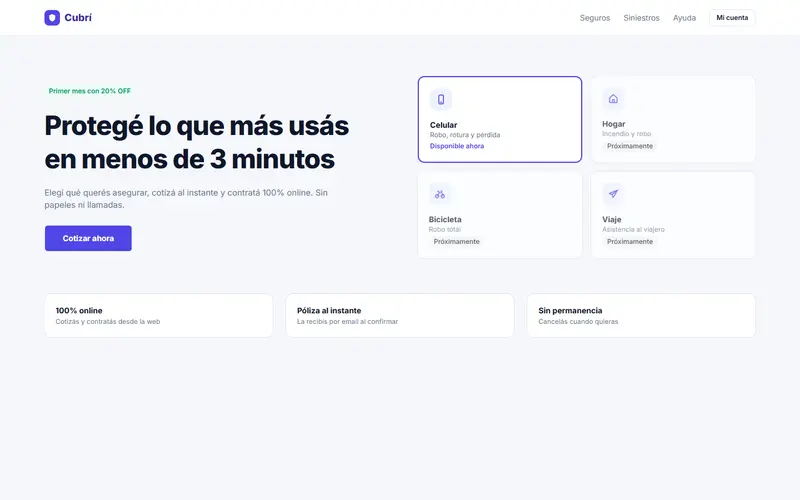
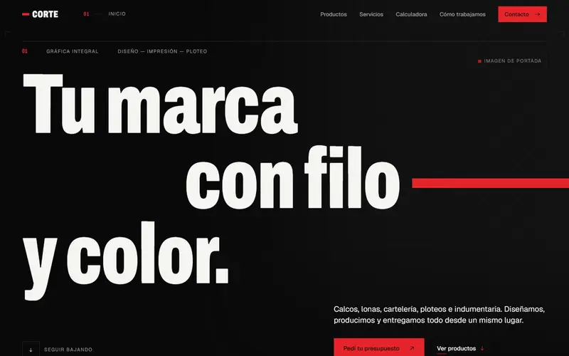
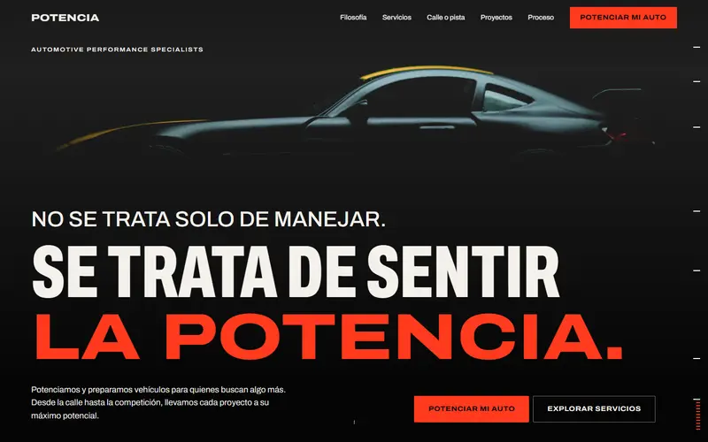
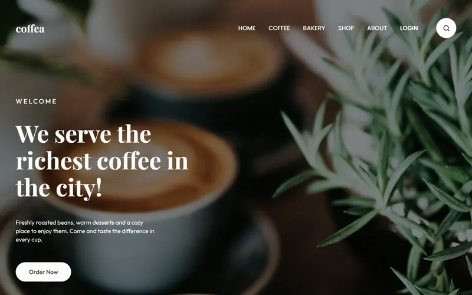
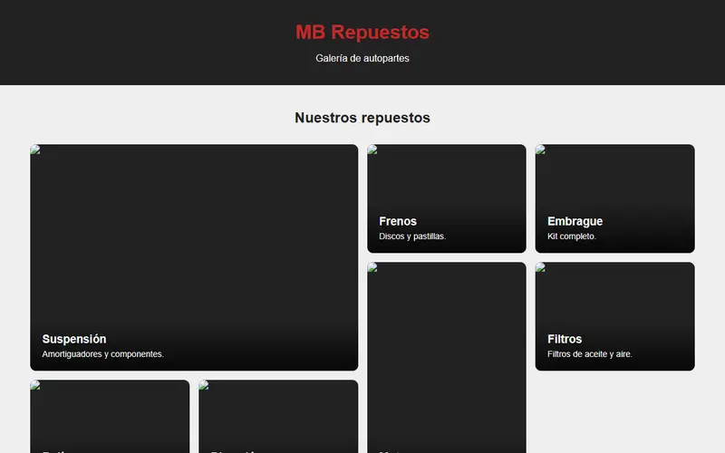
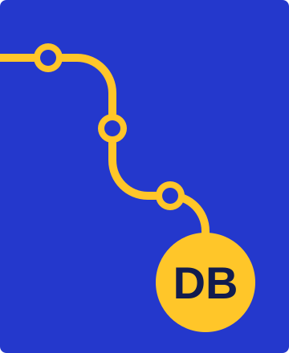

Diseño UX
Ordeno flujos, contenidos y errores para que cada paso se entienda.
Consultar disponibilidad
Estudiante de Sistemas de Información, diseño UX/UI y front-end
Diseño recorridos que se entienden a la primera y los llevo a código accesible.
Concepción del Uruguay, Argentina (GMT-3)
Ordeno flujos, contenidos y errores para que cada paso se entienda.
Armo sistemas de color, tipografía y componentes que se mantienen consistentes.
Convierto el diseño en páginas semánticas, livianas y navegables con teclado.
Uso un flujo simple para diseñar, versionar y publicar.

2026, caso de estudio
Checkout de un seguro de celular: elegir un producto, cotizar, cargar datos, pagar y recibir la póliza.
Resultado: un flujo de 7 pantallas publicado, que conserva los datos al volver atrás y al recargar.

2026, sitio publicado
Sitio de una gráfica integral que presenta productos y servicios, y lleva a pedir presupuesto.
Resultado: una calculadora estima cuántas calcomanías entran en una plancha antes de consultar por WhatsApp.

2026, sitio publicado
Landing de un taller que prepara autos para calle y competición.
Resultado: dos caminos, calle y pista, para que cada persona llegue a la consulta que le corresponde.

2026, caso de estudio
Landing de una cafetería ficticia, hecha solo con HTML y CSS.
Aprendizaje: menú y carruseles sin JavaScript, con elementos nativos y CSS.

2026, repositorio
Serie de ejercicios de HTML y CSS que crecen en dificultad.
Aprendizaje: la base de layout que usé en los proyectos siguientes.
2026
UADER, FCyT, sede Concepción del Uruguay
2025 – actualidad
UADER, FCyT, sede Concepción del Uruguay
Soy Diego y estudio Sistemas de Información en la UADER desde 2025. Hago sitios web: los diseño en Figma y después los programo con HTML, CSS y JavaScript. Acá están los trabajos que hice hasta ahora.
Arranco cada sitio por la versión mobile y después lo adapto a pantallas grandes.
Si un formulario falla, aviso qué campo hay que corregir.
Reviso el contraste y que todo funcione con teclado.

Si buscás a alguien para una pasantía, un proyecto o un primer puesto, escribime.